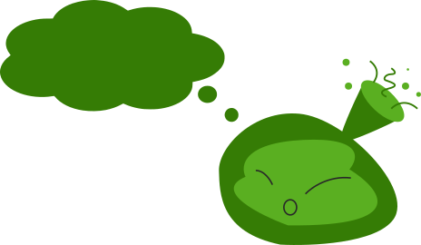
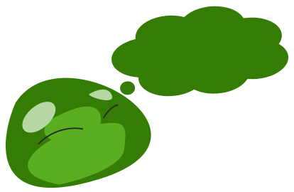
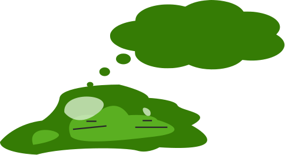

PT MONO
GAME
хорошая работа!
умница!
увы, ошибка
нужна помощь?

Слайт теряет энергию, помоги ему восстанвоить свои силы: собири разбросанные по полю буквы, используя свойство:
Слайт теряет энергию, помоги ему восстанвоить свои силы: собири разбросанные по полю буквы, используя свойство:
управляет горизонтальным выравниванием
элементов
внутри flex-контейнера:
flex-start: выравнивание элементов по левой
стороне контейнера
flex-end: выравнивание элементов по правой
стороне контейнера.
center: выравниваение элементов по центру контейнера.
space-around: создает одинаковые отступы вокруг элементов.
space-between: создает одинаковые отступы между элементами.
.PT_Mono {
Гарнитура: PT Mono;
Тип: моноширинный;
Начертания: Regular, Bold;
Кодировка: Multilingual Extended;
Форматы: OpenType/TTF;
Производитель: ПараТайп;
Дизайнер: Александра Королькова, Белла Чаева;
Дата выпуска: 30 декабря 2011 года — regular; 28 марта 2012 года — Bold;
}
Слайт теряет энергию, помоги ему восстанвоить свои силы: собири разбросанные по полю буквы, используя свойство:
ПТ Моно — моноширинный шрифт, входящий
в шрифтовую систему ПТ Проект.
Две гарнитуры PT Sans и PT Serif были выпущены ранее в 2009 и 2010 годах.
В 2012 году было добавлено новое начертание — Bold.
Был выпущен
30 декабря 2011 года
Был выпущен
28 марта 2012 года
PT Mono отлично подходит для оформления различных форм, таблиц и кодов благодаря разным формам букв и цифр, которые часто путают между собой (О, 0, I, l и т.п.).
Был выпущен
30 декабря 2011 года
Был выпущен
28 марта 2012 года

засечки вместо концевого элемента
сужение в месте примыкания
прямоугольная форма засечек
Слайт все еще слаб и не может тратить много энергии. Помоги ему собрать буквы, используя минимум свойств CSC:
Слайт все еще слаб и не может тратить много энергии. Помоги ему собрать буквы, используя минимум свойств CSC:
English (learn css easily) Türkçe (css'i kolayca öğrenin) Français (apprendre le CSS facilement) Deutsch (CSS leicht lernen) 日本語 (CSSを簡単に学ぶ)
Сочитание строгости (элементы,
напоминающие греческие колонны)
и мягкости (расширенные
округленные штрихи)
неострые (прямые) вершины